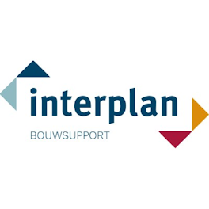
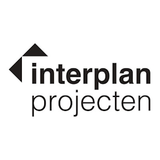
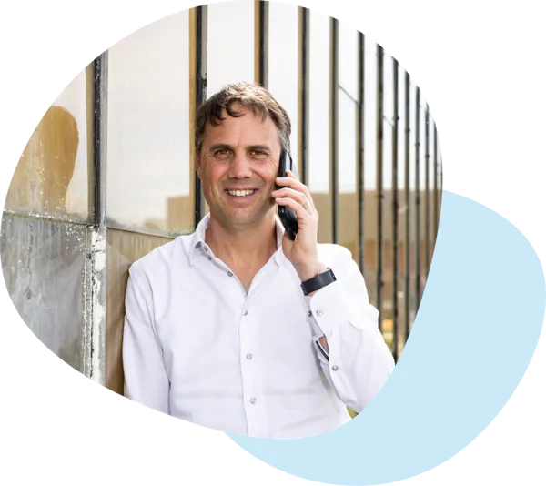

Voor Robert Jan Scholte en Yvonne Buitendijk Interplan · Sassenheim
dit is hoe we verdergaan


Hoi Robert Jan en Yvonne,
Jullie beste posts gaan over jullie mensen.
Vanaf 1 november gaan Foome en ditisABC samen verder. Voor jullie verandert er in het werk weinig: Romy neemt het stokje over van Anne, met dezelfde contentkalender en dezelfde WhatsApp-groep. Wel keken we alvast vooruit. Wat werkt er op LinkedIn, en waar kan het meer opleveren?

Michel GoulmyEigenaar van ditisABC. Bekeek met ons team de LinkedIn-pagina's en sites van Interplan, oktober 2026.
Wat verandert er per 1 november?In het werk niets. Romy kent Interplan al, maakt sinds eind september de posts en krijgt een complete overdracht van Anne. Achter haar staat een team van content creators, design, advertising en techniek.
Wat werkt het best?Jullie collega's. Acht van de tien best gelezen posts van Interplan Bouwsupport gaan over mensen: een nieuwe collega, een stagiair, padel na werktijd, een dag als kopersadviseur.
Waar kan het meer opleveren?Bij de vacatures, en bij Interplan Projecten. Die pagina is nog klein, maar heeft de twee best gelezen posts van het hele jaar. Bekijk ons voorstel.
Best gelezen op LinkedInInterplan, november 2025 tot en met oktober 2026
Samenwerking met interieurdesigners Denise BoekhoornInterplan Projecten · 2 juni9.100weergaven
Turnkey interieur voor Duinhil Seaside ResidencesInterplan Projecten · 7 oktober8.500weergaven
Padel na werktijdInterplan Bouwsupport · 27 februari8.500weergaven
Even voorstellen: Mareno, stagiairInterplan Bouwsupport · 14 januari6.700weergaven
Een dag als kopersadviseur, met IsabelleInterplan Bouwsupport · 12 november6.700weergaven
Nieuwe collega bij InterplanInterplan Bouwsupport · 7 januari6.300weergaven
Weergaven volgens de statistieken van de twee LinkedIn-pagina's.
dit is wat er al loopt
Twee merken, elke week zichtbaar
Het team van Foome verzorgt de LinkedIn van Interplan Bouwsupport, en sinds december ook van Interplan Projecten. Jullie delen projecten, foto's en nieuws in de WhatsApp-groep, en wij maken er posts van. Dat loopt vanaf 1 november gewoon door.
190.000keer gezien: Interplan Bouwsupport, het afgelopen jaar
73posts op Bouwsupport, bijna anderhalf per week
1.875volgers op de pagina van Bouwsupport
33.000keer gezien: Interplan Projecten, sinds december
Wat er het afgelopen jaar gebeurde
A
Projecten en opleveringen in beeld
Van Urban Woods in Delft en Stadshof ZAAM in Zaandam tot CAAI in Eindhoven en De Herentuyn in Voorburg. Met de partners getagd, zodat ook hun netwerk het ziet.
B
Collega's aan het woord
Interviews en blogs met collega's, een dagvlog van een kopersadviseur, video's over kopersbegeleiding en elke nieuwe collega met een eigen post. Plus het 28-jarig bestaan, de kerstborrel en het bedrijfsuitje.
C
Een eigen pagina voor Interplan Projecten
In december opgezet, met een eigen vormgeving. Sindsdien posts over Duinhil Seaside Residences en Residences van Oranje, en een kijkje achter de schermen.
D
Vast ritme, korte lijnen
Een contentkalender per kwartaal, een paar keer per jaar een sessie bij jullie op kantoor, en een jaar- en halfjaarrapportage. Wat in de groepsapp komt, staat vaak dezelfde week online.
Statistieken van de twee LinkedIn-bedrijfspagina's: Interplan Bouwsupport november 2025 tot en met oktober 2026, Interplan Projecten december 2025 tot en met oktober 2026.
dit is wat werkt
Mensen worden het meest gelezen
We legden de tien best gelezen posts van Interplan Bouwsupport naast elkaar. Acht daarvan gaan over collega's: wie er nieuw is, wat ze doen, en wat ze samen doen na werktijd. Posts over projecten worden ook goed gelezen, maar collega's trekken het grootste publiek.
Post op Interplan Bouwsupport
Datum
Weergaven
Padel na werktijd
27 feb
8.500
Even voorstellen: Mareno, vierdejaars Bouwkunde
14 jan
6.700
Hoe ziet een dag als kopersadviseur eruit? Met Isabelle
12 nov
6.700
Aannemers gezocht voor CBS De Burcht in Valkenburg
5 nov
6.500
Nieuwe collega bij Interplan
7 jan
6.300
Een belangrijke stap voor Valkenburg
4 feb
5.800
De kerstborrel voor collega's en partners
25 dec
5.500
Even voorstellen: Esther
23 mrt
5.200
Welkom Mariska
5 mrt
4.800
Welkom Joey, junior bouwkostenadviseur
1 apr
4.200
Statistieken van de LinkedIn-bedrijfspagina, november 2025 tot en met oktober 2026, afgerond op honderdtallen.
Wat dat zegt: jullie verhaal als werkgever doet het al goed, zonder dat het een vaste lijn is. Met vijf vacatures open is dat de plek om op door te bouwen.
dit is werving
Vijf vacatures, en de collega's om ze te laten zien
Op de site staan vijf vacatures: bouwkostenadviseur, bouwkundig projectmanager, bouwkostendeskundige, bouwkundig calculator en kopersadviseur. Precies die vakmensen zijn schaars. Wie twijfelt, wil weten met wie hij of zij gaat werken.
Drie vaste formats
Per vacatureEen dag als ...Een korte video of fotoserie met een echte collega in die functie. Op LinkedIn, en daarna bij de vacature op de site. De dagvlog van Isabelle als kopersadviseur is het bewijs dat het werkt.
Elke maandZo werken we bij InterplanDe vrijdagtraining, het vernieuwde kantoor, afstuderen en daarna vast in dienst, het bedrijfsuitje. Wat er al is, als terugkerende reeks.
Bij elke nieuwe collegaEven voorstellen, en een half jaar laterDe welkomstpost doet het al goed. Een half jaar later dezelfde collega: wat heb je geleerd, aan welk project werk je?
Wat we zagen op de vacaturepagina
A
Drie collega's op video, de vacatures met een algemene foto
Mitchell, Linda en Mirte vertellen in een korte video hoe hun werk eruitziet. Dat is sterk. Vier van de vijf vacatures tonen nog dezelfde algemene foto. Met een eigen beeld van een collega in die functie valt elke vacature op.
B
Video's met ondertitels
Op LinkedIn kijken de meeste mensen zonder geluid. Ondertitels in beeld maken de video's van Mitchell, Linda en Mirte ook daar sterk, en ze tellen mee in de toegankelijkheidsregels (WCAG 1.2.2).
C
Vacatures in Google for Jobs
Salaris, plaats en contactpersoon staan al bij de vacatures. Met een paar regels extra in de code toont Google ze ook in het vacatureblok bovenaan de zoekresultaten. Een klus die we graag samen met jullie websitebouwer oppakken.
D
Gerichte advertenties op LinkedIn
Een post bereikt vooral wie jullie al volgt. Met een kleine campagne per vacature bereiken we ook calculators en projectmanagers die nog niet volgen, in de regio die jullie kiezen.
E
Medewerkers als ambassadeur
Met 44 collega's op LinkedIn is het netwerk van het team groter dan dat van de pagina. Een vaste tip in de groepsapp om de vacaturepost te delen, maakt het bereik een veelvoud.
Vacaturepagina en vacatures van interplanbouwsupport.nl bekeken op 28 oktober 2026, met screenshots op mobiel en desktop.
dit is interplan projecten
Klein begonnen, en het snelst groeiend
Interplan Projecten heeft sinds december een eigen LinkedIn-pagina. Met 17 posts werd die al 33.000 keer gezien, en de twee best gelezen posts van beide pagina's samen staan hier: de samenwerking met de interieurdesigners en het turnkey interieur voor Duinhil.
9.100weergaven: samenwerking met de interieurdesigners
8.500weergaven: turnkey interieur Duinhil
7xzoveel volgers heeft Bouwsupport
2lopende projecten: Duinhil en Residences van Oranje
A
Bouwsupport als hefboom
Bouwsupport heeft zeven keer zoveel volgers. Een vaste kruisbestuiving tussen de twee pagina's, en het verhaal van de integrale aanpak als rode draad: van kopersbegeleiding tot een turnkey interieur, onder één dak in Sassenheim.
B
Per project een eigen reeks
Elk nieuwbouwproject krijgt een vaste opbouw: de plek, de ontwikkelaar, het interieurconcept, de oplevering. De video-opname bij Residences van Oranje is daarvoor een mooi begin.
C
Kopers bereiken waar ze zitten
Kopers van high-end nieuwbouw zitten ook op Instagram. Per project een landingspagina met Instagram- en Meta-advertenties, gericht op de kopers van dat project.
dit is de websites
Twee goede sites, die op een telefoon nog niet laten zien wat ze waard zijn
Wie een LinkedIn-post aanklikt, komt op jullie site, en meestal op een telefoon. Daarom keken we ook naar interplanbouwsupport.nl en interplanprojecten.nl. Er staat veel goeds: sterke verhalen van collega's, mooie interieurs, en servers die snel reageren. En er zijn punten die snel beter kunnen.
Gemeten op 28 oktober 2026, op een telefoon
BouwsupportDe homepage laadt een achtergrondvideo van 66 MB, ook op een telefoon. Een kleinere versie van 13 MB staat al klaar, maar wordt niet gebruikt. Snelheidsscore 72 van 100, helemaal in beeld na 5,2 seconden.
ProjectenOp een computer 100 van 100. Op een telefoon staat de grote foto pas na 8,7 tot 13,4 seconden in beeld: de interieurfoto's worden op volle grootte geladen.
ServerBij allebei onder de 0,4 seconde. De basis is snel; de winst zit in beeld en video.
Van post naar paginaEen kandidaat of koper die doorklikt vanaf LinkedIn of Instagram, wil meteen beeld zien. Wie te lang wacht, klikt weg.
Google telt meeSnelheid op mobiel is een van de signalen waarmee Google bepaalt wie bovenaan staat.
Advertenties leveren meer opEen klik op een advertentie die op een snelle pagina landt, wordt vaker een sollicitatie of een aanvraag.
Gemeten met Lighthouse op mobiel en desktop, homepages drie keer op mobiel. Server-wachttijd ook gemeten met losse verzoeken.
Interplan Bouwsupport: wat we verder zagen
A
Een link op LinkedIn toont geen foto
Geen van de 77 pagina's geeft een deelafbeelding mee. Wie een vacature of nieuwsbericht deelt, krijgt op LinkedIn en WhatsApp alleen een kale link. Een paar regels in de code, en elke gedeelde link valt op.
B
De bedrijfsgegevens in de code kloppen niet
Op de site staat jullie nummer, 0252 222 007. Maar Google en AI lezen ook een blok met bedrijfsgegevens in de code. Daarin staat als telefoonnummer 023 542 24 72. Als bedrijfsnaam staat daar de volledige slogan. Wie Interplan via Google of AI zoekt, kan dus het verkeerde nummer krijgen. Een snelle correctie in de code.
C
ChatGPT en Claude mogen niet alles lezen
De robots.txt nodigt alle zoekrobots uit, maar de server weigert de robots van OpenAI en Anthropic. Wie in AI-antwoorden wil verschijnen op vragen als "wie doet een second opinion op bouwkosten?", zet die deur open.
D
Kleine dingen die opvallen
In het nieuwsbericht van 15 juli staat "ðŸ¤" in plaats van een emoji, ook op de homepage. In menu en footer staat "projectcordinatie", en op de teampagina een e-mailadres met een typfout (interplnabouwsupport.nl). Datums van nieuwsberichten staan in heel lichtgrijs, en op 46 van de 77 pagina's ontbreekt een hoofdkop.
E
Onderhoud
De sprong naar een nieuwe PHP-versie is deze maand gemaakt. De beveiligingsupdate van 21 oktober (PHP 8.5.12) staat nog open, net als een update van jQuery, dat nu een versie uit 2019 gebruikt. Allebei vaste klussen voor het onderhoud.
Interplan Projecten: wat we verder zagen
A
Een sterke basis
Actuele WordPress, goede beveiliging, toegankelijkheid 93 tot 97 van 100, en adres en veelgestelde vragen netjes in de code. Hier is vooral nog winst in beeld.
B
De foto's mogen kleiner op een telefoon
Op de homepage valt 2,3 MB te besparen, op de pagina van Duinhil 4,6 MB, zonder dat iemand verschil ziet. Op drie pagina's wordt juist de grote foto bovenaan als laatste geladen. Ook bewaart de browser de bestanden niet, dus bij elk bezoek opnieuw downloaden.
C
De Engelse versie is nog niet af
Negen van de tien Engelse pagina's hebben geen omschrijving voor Google, de Engelse homepage heeft een Nederlandse titel, en een link naar het Engelse contactformulier werkt op vijf plekken niet. Voor kopers uit het buitenland is dat net de pagina die telt.
D
Bouwsupport komt alleen op Over ons voor
Bouwsupport verwijst in menu en footer naar Projecten, andersom alleen in de tekst van één pagina. Het verhaal "van kopersbegeleiding tot turnkey interieur, onder één dak" verdient een vaste plek op beide sites.
Ons advies: de snelle winst kan meteen, samen met jullie websitebouwers. Het meeste is klein werk met direct effect. Willen jullie verder, dan denken we graag mee over een eigen werken-bij-omgeving voor Bouwsupport, met de vacatures, de collega-video's en de interviews bij elkaar.
dit is ons voorstel
Wat loopt, loopt door. En daar bouwen we op voort.
Wat we samen in een eerste werksessie in november kunnen uitwerken:
A
LinkedIn voor beide merken, met Romy
Dezelfde aanpak: de WhatsApp-groep als bron, een contentkalender per kwartaal en goedkeuring zoals jullie gewend zijn.
Een complete overdracht van Anne naar Romy: de vaste formats, de lopende interviews, de beeldmap en jullie tone of voice.
Elk halfjaar een rapportage met de cijfers en de best gelezen posts, en een sessie bij jullie op kantoor.
B
Employer branding als vaste lijn
Per vacature een "dag als ..." met een collega, op LinkedIn en bij de vacature op de site.
Een maandelijkse reeks over werken bij Interplan, en een vervolg op elke welkomstpost.
Desgewenst een LinkedIn-campagne per vacature, en een vaste deeltip voor het team.
C
Interplan Projecten laten groeien
Kruisbestuiving met Bouwsupport en een vaste reeks per nieuwbouwproject.
Instagram erbij, met de interieurs als beeld.
Desgewenst per project een landingspagina met advertenties op kopers.
D
De websites: nu sneller, of samen nieuw
Nu: de lijst met snelle winst doorlopen met jullie websitebouwers. Video en foto's kleiner, deelafbeeldingen, bedrijfsgegevens, vacatures in Google for Jobs.
Daarna, als jullie willen: een werken-bij-omgeving voor Bouwsupport, en één ontwerptaal voor beide merken.
dit is ditisABC
Waarom wij
A
Dezelfde mensen, een groter team
Romy en het team van Foome gaan mee. Bij ons zitten ze naast specialisten in video, design, advertising en websites. Wie er nodig is, schuift aan.
B
We kennen de bouw
We maakten de websites van AHCO Weg- en Waterbouw in Lisse en Van der Geest in Hillegom, allebei met werk in uitvoering en vacatures. Opdrachtgevers en vakmensen uit jullie eigen wereld.
C
Om de hoek
Hillegom ligt op tien minuten van Sassenheim. Even langskomen voor een interview, een oplevering of een kijkdag is zo geregeld.
D
Gemeten, niet gegokt
Google Partner, en we sturen op cijfers: bereik, interacties, reacties op vacatures en aanvragen van kopers.
Geen losse freelancer, maar een team van specialisten uit Hillegom, om de hoek van Sassenheim. Romy is jullie vaste aanspreekpunt. Achter haar staat het hele team.
Het team van ditisABC in Hillegom.
2012sinds dit jaar websites en marketing
13mensen in ons team
4xFD Gazelle, 2023 tot en met 2026
GooglePartner
RomyJullie vaste aanspreekpunt, voor Interplan Bouwsupport en Interplan Projecten.
Geen contracten. Elke dag presteren.Jullie zitten nergens aan vast. We moeten elke dag laten zien wat we waard zijn, en zo willen we het ook.
A
Onderdeel van jullie team
We draaien mee in jullie planning, via dezelfde WhatsApp-groep. Een oplevering, een kijkdag of een nieuwe collega? We horen het meteen.
B
Specialisten onder één dak
Content, video, design, advertising en websites. Wie er nodig is, schuift aan.
C
Alles open en van jullie
De pagina's, de accounts en het beeld blijven van jullie. Elk halfjaar een rapport in gewone taal.
D
Snel bereikbaar
Eén appje of belletje naar 023-3020409 en het team ziet je vraag. Mij direct bellen of appen mag natuurlijk ook.
dit is waarom nu
De contentkalender voor 2027 maken we in november
In november en december plannen we het eerste kwartaal van 2027. Dat is het moment om de vacatures en Interplan Projecten er een vaste plek in te geven. Zullen we een werksessie plannen met Romy?
Michel GoulmyEigenaar van ditisABC
Voor het snelste antwoord bel of app je ons team, of mail je naar marketing. Mij direct bellen of mailen mag natuurlijk ook.
Zelf een moment kiezenBij ons op kantoor, videobellen of bellen, direct in mijn agenda
Liever bij jullie in Sassenheim? App ons, dan komen we langs.
Analyse: Michel Goulmy en het team van ditisABCLinkedIn-statistieken van Interplan Bouwsupport en Interplan Projecten, november 2025 tot en met oktober 2026. Sites bekeken op 28 oktober 2026.
dit is ditisABC
Erkenning en partners
2023202420252026
Vier keer op rij een van de snelst groeiende bedrijven van Nederland
 AHCO Weg- en WaterbouwWegenbouw, waterbouw, grondwerk en leidingen in Lisse. Website door ditisABC, met werk in uitvoering, certificaten en vacatures.
AHCO Weg- en WaterbouwWegenbouw, waterbouw, grondwerk en leidingen in Lisse. Website door ditisABC, met werk in uitvoering, certificaten en vacatures.
 Van der Geest HillegomDrainage, grondwerk, heiwerk en machineverhuur. Website door ditisABC, met een pagina per dienst, projecten, actueel en vacatures.
Van der Geest HillegomDrainage, grondwerk, heiwerk en machineverhuur. Website door ditisABC, met een pagina per dienst, projecten, actueel en vacatures.


 Leadinfo
Gold Partner
Leadinfo
Gold Partner
 WordPress
Websites en webshops
WordPress
Websites en webshops
 Gemeente Culemborgmakelpuntculemborg.nl
Gemeente Culemborgmakelpuntculemborg.nl
 Off Grid Power Stationoffgridpowerstation.nl
Off Grid Power Stationoffgridpowerstation.nl
 De Centralede-centrale.nl
De Centralede-centrale.nl
 De Ruijtermeubelderuijtermeubel.nl
De Ruijtermeubelderuijtermeubel.nl
 Candy Festivalcandyfestival.nl
Candy Festivalcandyfestival.nl
 Miffytownmiffytown.com
Miffytownmiffytown.com
 Glanszglansz.nl
Glanszglansz.nl
 The Bastardthebastard.com
The Bastardthebastard.com